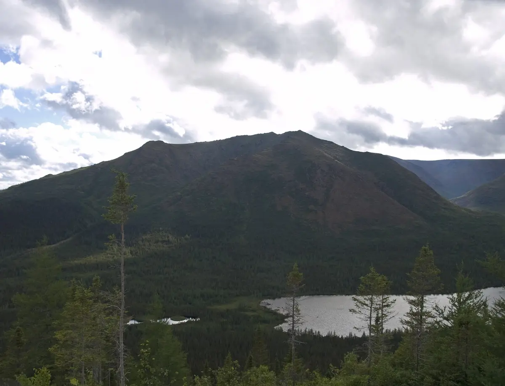
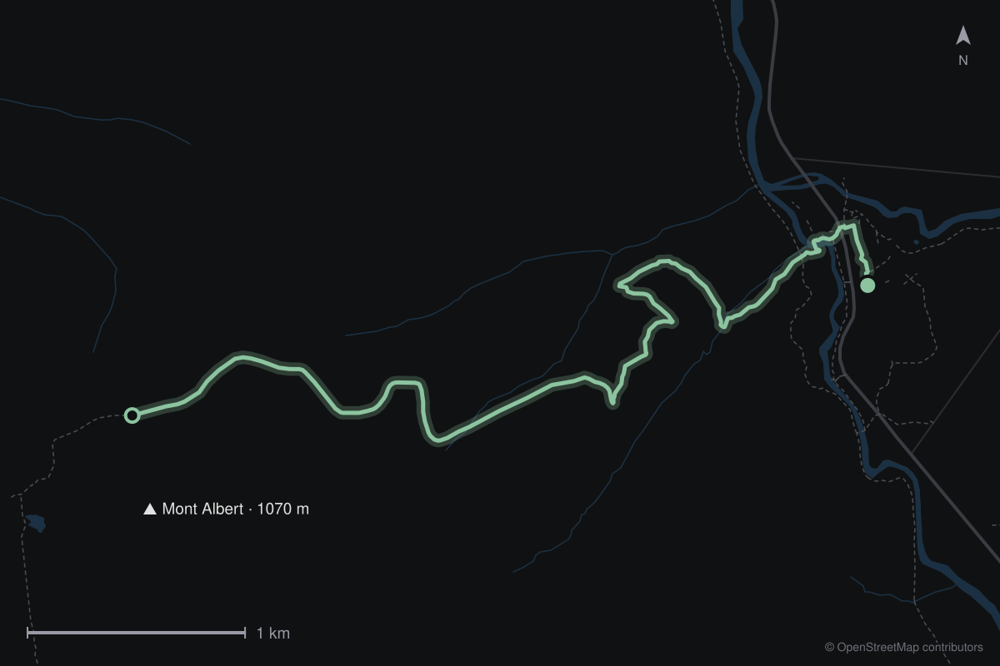

Mont Albert, la meseta desnuda de la Gaspésie
Actualizado el 21 de noviembre de 2026
Una subida constante desde el Gîte du Mont-Albert hasta una enorme meseta sin árboles, de roca serpentina, donde vive el caribú de la Gaspésie por encima del bosque. Una de las grandes rutas de Quebec.

- Distancia
- 11,6 km ida y vuelta por la cara norte, o un circuito de 17,3 km
- Desnivel
- Unos 860 m
- Duración
- Unas 5 h ida y vuelta, de 6 a 8 h el circuito
- Dificultad
- Difícil
- Salida
- Gîte du Mont-Albert, en la ruta 299
- Temporada
- La cara norte solo abre parte del verano, para proteger al caribú
Mapa

Perfil de altitud

El recorrido
Desde el Gîte du Mont-Albert, el sendero cruza el río Sainte-Anne y sube por el bosque de la cara norte. La pendiente es constante de principio a fin: hay pocos tramos llanos antes del límite de los árboles.
Luego el bosque deja paso a la meseta, unos 13 kilómetros cuadrados de serpentina ocre y desnuda, con el refugio de la cumbre y una vista inmensa sobre los Chic-Chocs. Con el cielo despejado parece el gran norte, a pocas horas del mar.
Baja por el mismo camino o sigue el circuito: cruza la meseta, baja por la cara sur y vuelve junto al río, con unos 17,3 km en total.
Conviene saber
- Primero el caribú. La meseta alberga la última manada de caribús al sur del San Lorenzo. Quédate en el sendero, guarda la distancia y respeta los cierres.
- El tiempo cambia rápido. Incluso en julio, la meseta puede estar fría, con viento y niebla. Lleva capas, un cortavientos y agua.
- Sal temprano. Guarda tiempo para disfrutar de la cumbre y bajar antes de que acabe el día.
- Acceso al parque. Los parques nacionales de Quebec cobran entrada. Consulta las fechas de apertura y el estado de los senderos en sepaq.com.
Fotos


Guarda el día con Arpente
Toca grabar al salir y guarda el iPhone en el bolsillo. Arpente dibuja tu recorrido y mide la distancia, el tiempo y el desnivel, incluso con la pantalla apagada. Añade una foto y una nota, y la salida queda en tu diario. Descubre Arpente.
Otras salidas
 Acropole des DraveursUnos 10,4 km ida y vuelta hasta la primera cumbre, 11,2 km hasta la tercera
Acropole des DraveursUnos 10,4 km ida y vuelta hasta la primera cumbre, 11,2 km hasta la tercera Sentier de la StatueUnos 7,6 km ida y vuelta, o 3,6 km ida y vuelta hasta el mirador Bellevue
Sentier de la StatueUnos 7,6 km ida y vuelta, o 3,6 km ida y vuelta hasta el mirador Bellevue Canal de Lachine14,5 km solo ida, del Viejo Puerto a Lachine
Canal de Lachine14,5 km solo ida, del Viejo Puerto a Lachine Mont RoyalUnos 1,4 km desde lo alto de la calle Peel al mirador, unos 2 km hasta la cruz
Mont RoyalUnos 1,4 km desde lo alto de la calle Peel al mirador, unos 2 km hasta la cruz
El trazado del mapa es orientativo, calculado con BRouter sobre datos de OpenStreetMap (© colaboradores de OpenStreetMap, ODbL); altitudes SRTM. No sustituye al mapa oficial del parque. Las distancias, desniveles y tiempos de la tabla vienen de fuentes de los parques: consulta las condiciones antes de ir.